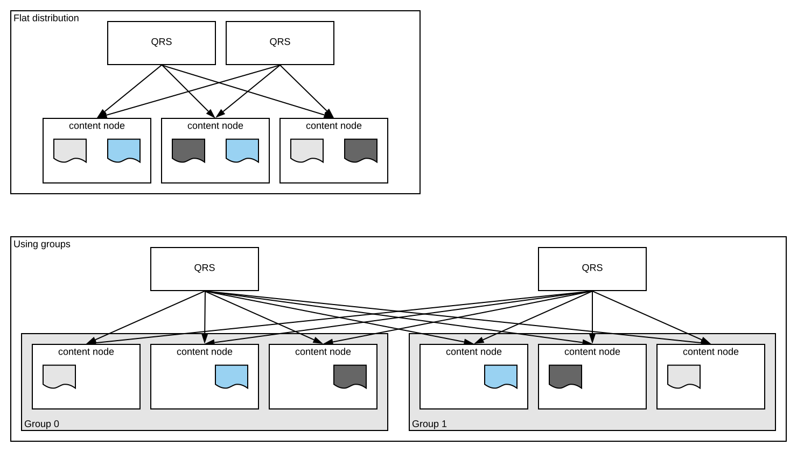

With flat distribution, documents are uniformly distributed across content nodes. This distribution is used to scale QPS when the dynamic query cost is high. With hierarchical distribution, documents are distributed among a set of groups, each containing content nodes, such that the entire document collection is contained in each group. This distribution is used to scale QPS in cases where the static query cost is high.
For more detailed information on capacity planning and performance tuning take a look at Vespa search sizing guide. For more information on generic use of hierarchical distribution take a look at Document distribution.
With flat distribution, documents are distributed equally across all content/search nodes in the cluster. The redundancy of the cluster specifies how many copies of a document that exist among the nodes. Below, redundancy is 2 and each document is located on two nodes;
Hierarchical distribution defines a number of groups, each containing a set of content/search nodes. The documents are uniformly distributed across all nodes in each group, such that the entire document collection is contained in each group. The total redundancy of the cluster specifies how many copies of a document that exists in total. Above, total redundancy is 2, and redundancy 1 in each group.
In addition to an indexed content cluster, there are Container nodes running the Search Container. These scatters queries to content nodes and gathers the partial results. When using flat distribution, each query is sent (in parallel) to all the content nodes. With hierarchical distribution, a single group will instead be (round robin) selected for each given query and that query only sent to the nodes of that group.
An important aspect when sizing an indexed content cluster is the QPS (queries per second) the system can handle. The cost of running a query is the sum of two parts, the static query cost (SQC) and the dynamic query cost (DQC). SQC is an administrative overhead, and is typically the cost of building a large query with many terms and/or the cost of doing an expensive 2. phase rank computation on the content/search nodes. DQC depends and scales with the number of documents on the content/search nodes. We can scale the QPS in two ways (or the combination of the two), depending on the ratio SQC / (SQC + DQC). In both cases, the number of search container nodes must typically be increased to fully utilize the content/search nodes.
| Add nodes (low fixed query cost) | As long as SQC / (SQC + DQC) is small, QPS can be scaled by just adding more content/search nodes in a system using flat distribution. This will reduce the number of documents per node, and thus reduce the DQC and the total query cost. |
|---|---|
| Add groups (high fixed query cost) | When SQC / (SQC + DQC) is high, one can no longer just add more content/search nodes. Since the query is distributed to all content/search nodes in the cluster when using flat distribution, the SQC will increase with the number of nodes. Address this problem by using hierarchical distribution. Each group can handle a particular QPS, so by adding more groups, one can effectively scale QPS. |
Vespa supports 2 dispatch policies for dispatching queries to the groups. Default is round-robin. This requires the groups to be fairly equal with respect to serving capacity. However there is also the random that will favour fast groups and thus try to load balance between them. It will select a random group with a probability that is proportional to the inverse latency.
When using hierarchical distribution in an indexed content cluster, the following restrictions apply:
2|* ensures that 2
document copies are stored in each group. If we had redundancy 6 and 3 groups the
distribution partitions would be 2|2|* instead